最接近盲盒
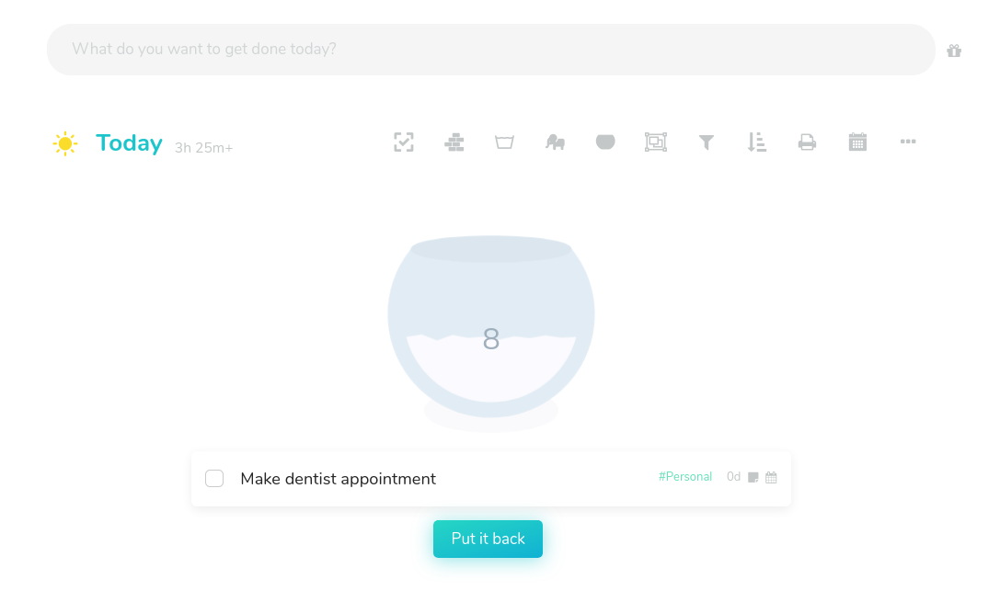
Amazing Marvin · Task Jar
用户把任务放进 jar，系统抽出一个任务；不想做可以放回去。它解决的是“我不知道从哪里开始”的选择困难，玩法上最接近开盲盒。
机制用户先定义任务池，再随机抽取。
Jovida 借鉴可做成 Focus one task mode，但抽取逻辑要更智能。
这份报告汇总了此前从 Amazing Marvin、Llama Life、Sunsama、Structured、Goblin Tools、Tiimo、RoutineFlow、Dubbii、Habitica 等产品里调研到的玩法。重点不是竞品清单，而是提炼 Jovida 可以复用的交互模式：只看一个任务、把任务先放下、重置今天、把大任务拆成第一步。
这组产品都在降低“面对长列表”的心理负担，但策略不同：有的是随机抽一个，有的是根据任务属性推荐，有的是把整个工作区切到一个任务上。
对 Jovida 来说，最强方向不是“抽盲盒”，而是“Jovida 先帮你选一个现在最值得做的小任务”。盲盒的趣味性可以保留，但核心要有可信的选择理由。

用户把任务放进 jar，系统抽出一个任务；不想做可以放回去。它解决的是“我不知道从哪里开始”的选择困难，玩法上最接近开盲盒。
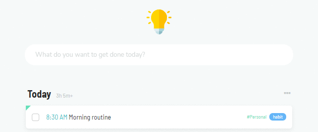
系统基于时长、能量、截止时间等规则推荐任务，比随机抽取更有“为什么现在做这个”的可信度。
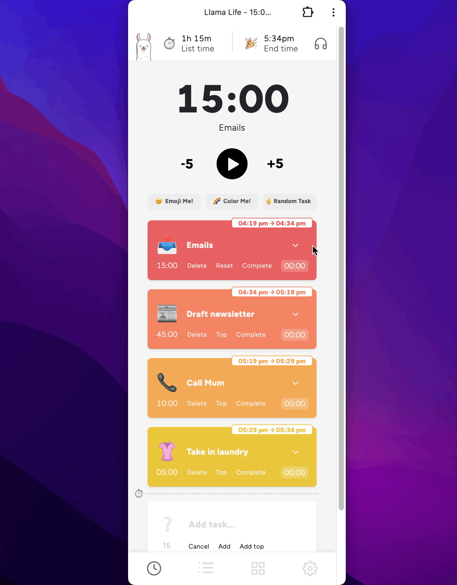
Random Task 是一个明确按钮，用户知道自己是在请求系统替自己挑一个。它的优点是简单直接，缺点是“智能感”和“信任感”较弱。
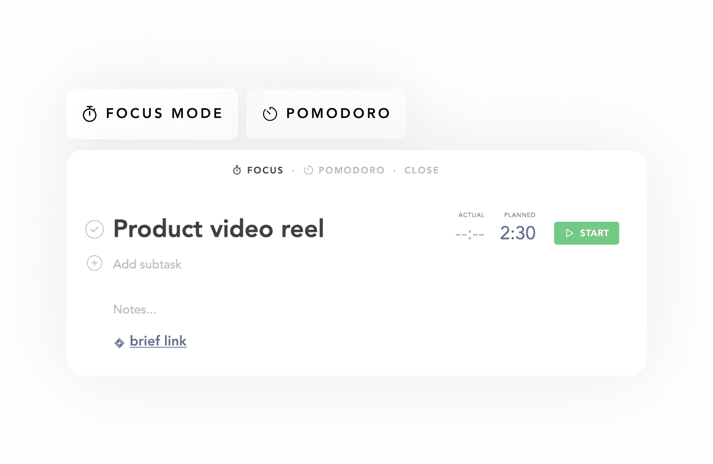
Focus Mode 把用户带进“现在只处理这一个任务”的空间。它没有盲盒感，但降低了任务列表带来的注意力分散。
类似“任务坟墓 / maybe later”的能力，本质不是归档，而是帮用户降低挫败感：有些任务不是今天失败了，而是现在不值得继续占用注意力。
Jovida 可以把“放下”设计成正向动作：不是你没做完，而是 Jovida 帮你把今天救回来。过期任务应提供三种轻操作：重排、拆小、先放下。
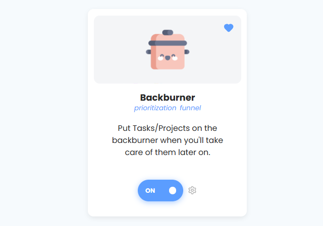
Backburner 是把暂时不处理的任务和项目放到后场，支持 later、someday、start date 等方式。它接近“任务坟墓”，但语气没有失败感。
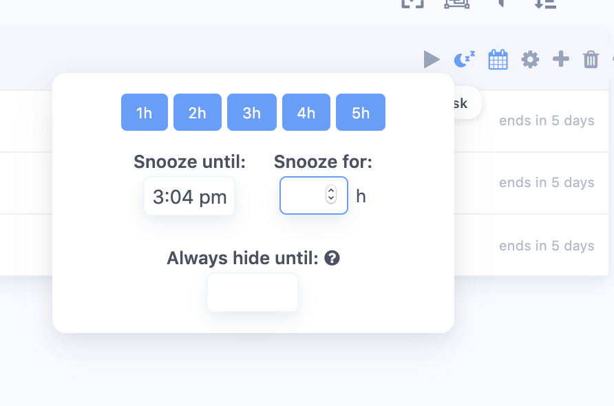
Snooze 让任务先消失，到指定时间再回来。它更像“暂时免打扰”，适合处理用户当下做不动但又不想删除的任务。
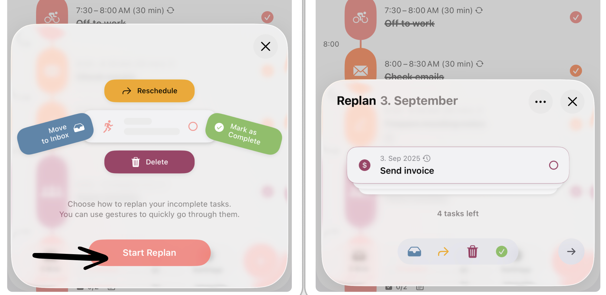
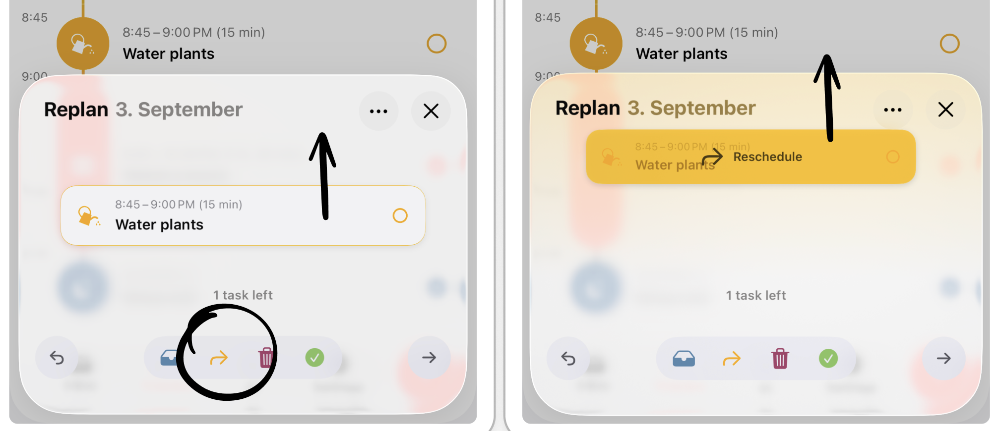
Structured 会把未完成任务集中到 Replan 流程里，用户可以重新安排、移到 inbox、删除或标记完成。它更接近“把残局收拾一下”，而不是简单让过期任务变红。
Today reset 不是单纯 reschedule，而是一个情绪价值很强的恢复动作：我今天撑不住了，帮我把重要任务留下，不重要的先挪走。
这个功能可以成为 Jovida 区别于传统 Todo 的关键：传统工具让用户自己整理残局，Jovida 应该主动判断哪些必须留、哪些可以推迟、哪些需要拆小。
Structured 的 Replan 可以作为 Today reset 的直接参考：它没有替用户自动判断优先级，但已经把“未完成任务处理”从普通列表里拆成独立流程。
Snooze 不是 Today reset，但它提供了关键组成：把任务从当前压力环境里拿掉，到更合理的时间再出现。
这里的关键不是“生成更多子任务”，而是让用户看到第一个足够小、足够不吓人的动作。Tiny step 可以和 Magic Subtasks 绑定，但体验上要更像“我现在就能做一下”。
Jovida 的 Magic Subtasks 可以分两层：先把大任务拆开，再把第一步用更有仪式感的方式呈现出来，例如倒计时、陪做、角色鼓励、完成后的轻奖励。
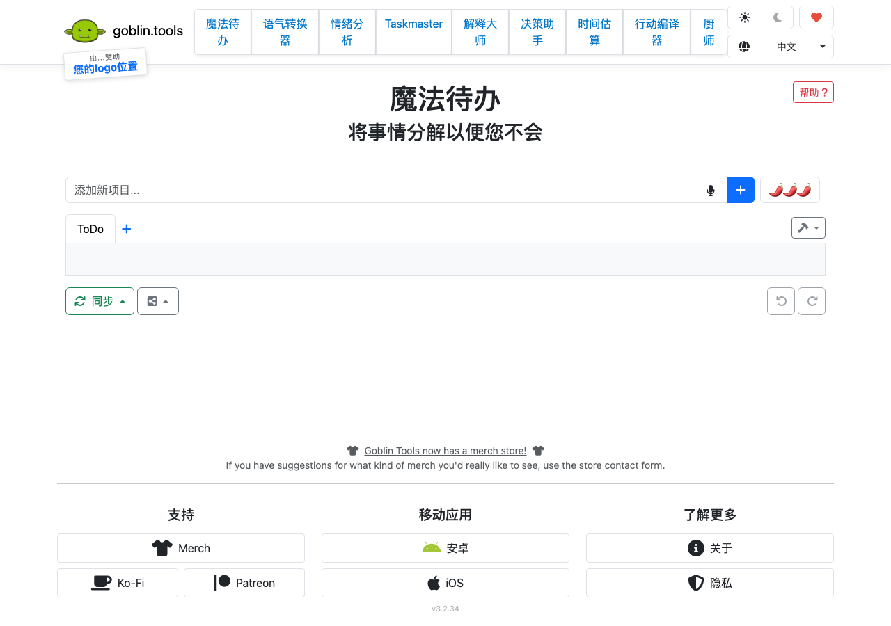
Magic ToDo 面向执行功能困难用户，把模糊任务拆成步骤，并支持调节拆分细度。它验证了“AI 拆小”对启动困难用户有直接价值。
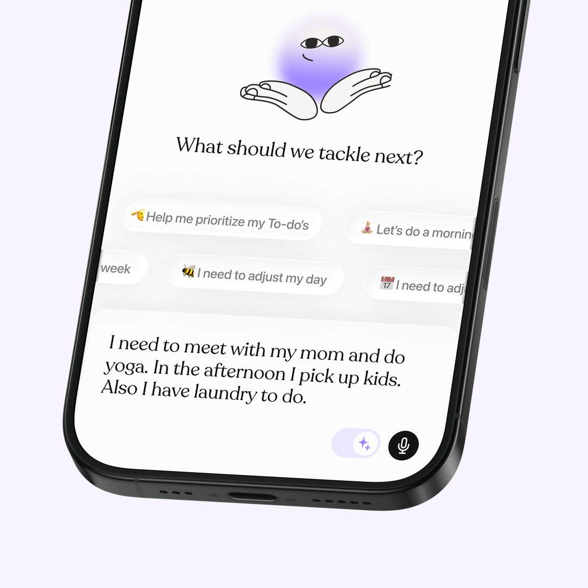
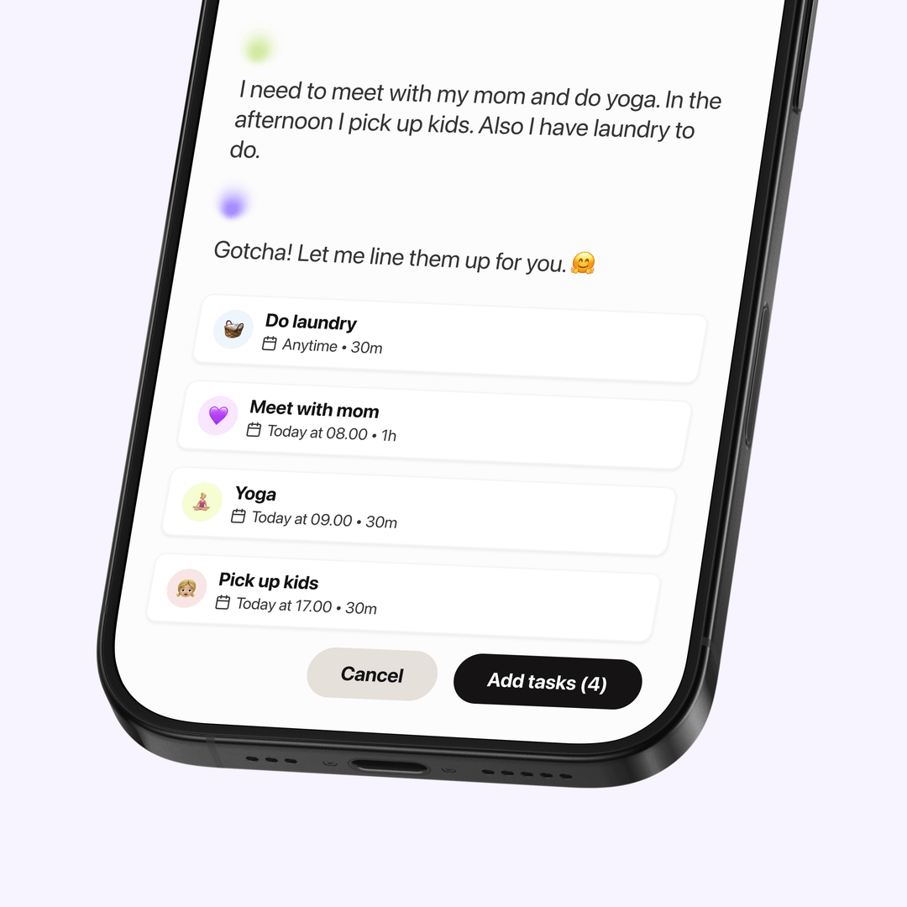
Tiimo 更强调把用户输入转成计划，和 Jovida 的 Brain Dump / Magic Subtasks 组合很接近。它的价值在于“我只说一句，系统帮我变成结构”。
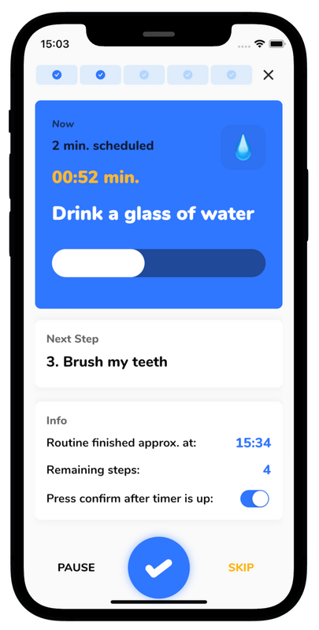
RoutineFlow 把一个 routine 展示成当前步骤和计时器。它不是 AI 产品，但“只看下一步”的执行体验很适合 tiny step。
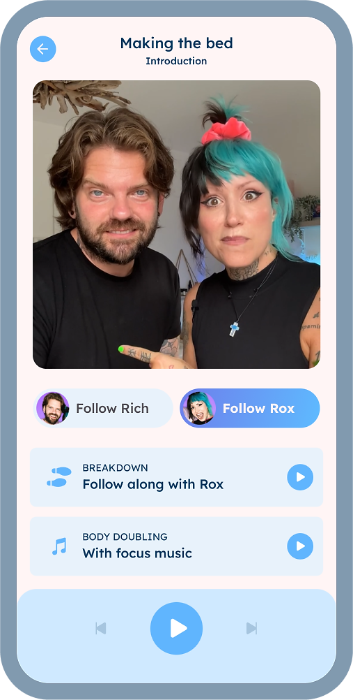
Dubbii 用真人陪做和任务拆解降低启动阻力。它提醒 Jovida：tiny step 不只是信息结构，也可以是陪伴感和仪式感。
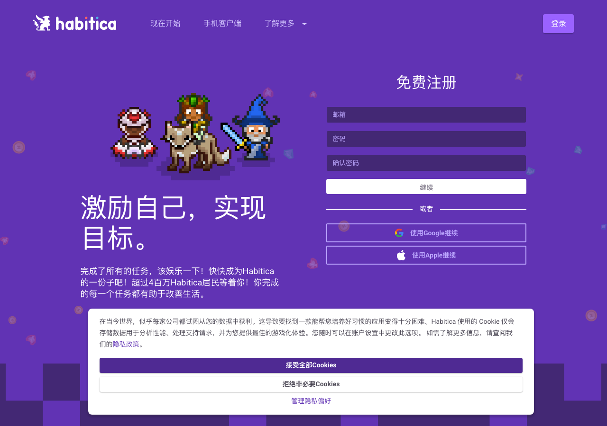
Habitica 把任务完成包装成 RPG 奖励。Jovida 不需要走重游戏化路线，但可以借鉴“完成一个微动作就有轻反馈”的即时奖励。
这些不是互斥功能，而是同一个产品主张的不同入口：Jovida 不只是记录任务，而是在用户卡住时主动把下一步变小、变清楚、变可开始。
入口可以有“抽一个”的趣味，但结果应由 Jovida 结合时间、能量、截止时间和历史拖延来挑。
连续延期的任务不要一直变红。给用户一个体面的放下入口，同时保留未来召回。
文案要像“帮你救回今天”，机制是重要任务保留、普通任务重排、模糊任务拆小。
Magic Subtasks 不要只给一串子任务，先给一个 2 分钟能开始的动作，并配一个轻仪式。
先做一个“Jovida picks one task”入口，点击后只展示一个推荐任务、一个原因、一颗“太难了，拆小一点”的按钮。它能同时验证单任务模式和 tiny step 的价值。
当用户有多次延期行为后，Jovida 才出现 Today reset / Maybe later。这样不会让新用户一上来就面对复杂功能，也更像 Task Buddy 真的观察到了用户状态。
这里列出报告中用到的功能介绍页。若没有单独功能页，则使用官网或帮助中心页面。